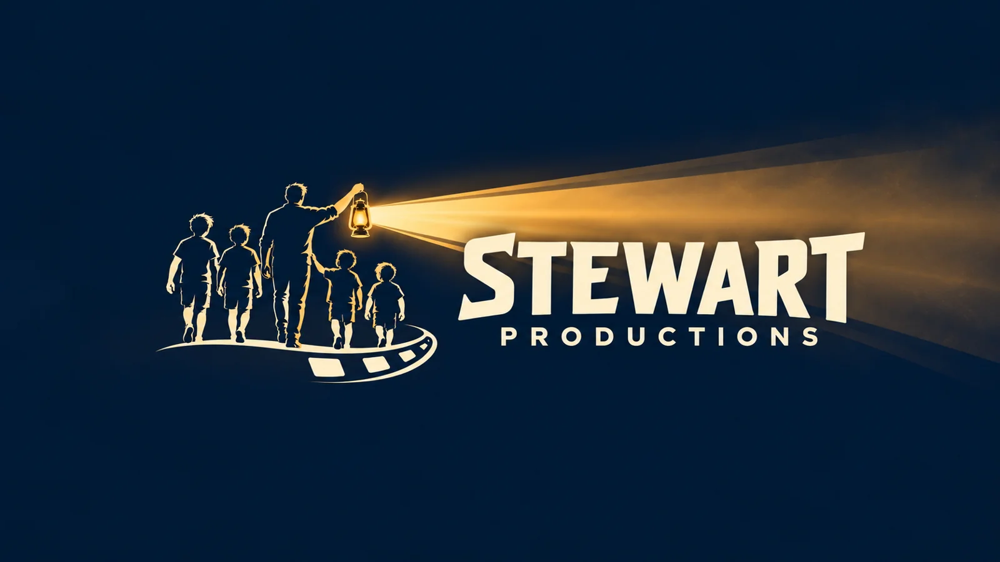

Songs with a story.
Original music and videos by John Stewart, rooted in faith, family, and history.
Explore the albums
Albums

Hold the Line
Eight songs about courage, sacrifice, and holding fast when it counts.
Listen to the albumSteel and Nail Prints
A father and son, the USS Missouri, and a song about sacrifice and faith.
Music video
Watch on YouTubeListen to the song
Open on AudiomackAbout Stewart Productions
I'm John Stewart, a mechanic, husband, father of four, and songwriter from central Pennsylvania. I write about my Christian faith, family life, and moments in history that stay with me. Stewart Productions is where I share those songs and the videos that bring their stories to life.